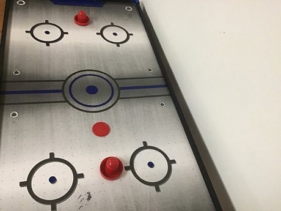

Home / Modern Heritage / Northern and Eastern Europe
Encyclopedia ID 377
Cymbergaj
Also known as Polish puck table game


Two players slide a puck with hand pushers on a table (air-cushioned in modern form) and try to land it in the opponent's goal; the original used coins flicked with a comb or ruler.
Heritage note
Part of the living heritage of Poland.
Origins
Usually placed in the era of Modern Heritage (1800 to today), although its exact origins are uncertain, within the cultural world of Northern and Eastern Europe.
Play it
Sources
Related entries

Hose-Run Fire Sport
Czechia +1 · Dexterity and skill games
Varpa
Sweden · Dexterity and skill games
Ice Stock Sport
Austria +1 · Dexterity and skill games

Pinata swing
Mexico +1 · Dexterity and skill gamesPlay preview · in the Sports & Skill of the World app
Ring Tilting
Croatia · Dexterity and skill gamesPlay preview · in the Sports & Skill of the World app
More from Poland

Bolesławiec Stamped Pottery
Poland · Crafts and making

Kurpie Layered Paper Cutting
Poland · Crafts and making
Paper Soccer
Poland +2 · Crafts and makingPalant
Poland · Street and playground gamesPolish draughts
Poland · Board and table games